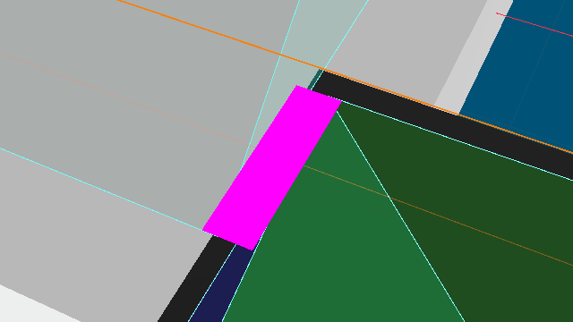
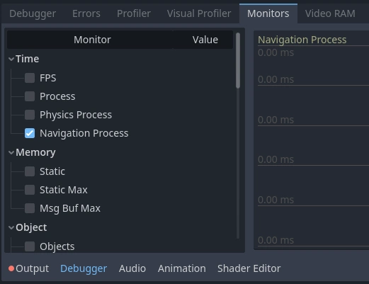
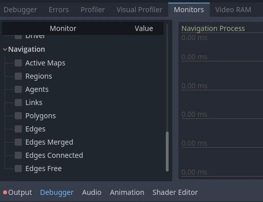

Công cụ gỡ lỗi navigation
Ghi chú
Các công cụ, thuộc tính và hàm debug chỉ có trong các bản build debug của Godot. Đừng dùng bất kỳ thứ nào trong số đó trong code sẽ nằm trong bản build phát hành.
Bật gỡ lỗi navigation
Các hiển thị trực quan navigation debug được bật mặc định trong trình chỉnh sửa. Để hiển thị navigation mesh và kết nối cả lúc chạy, hãy bật tùy chọn Visible Navigation trong menu Debug của trình chỉnh sửa.

Trong các bản build debug của Godot, navigation debug cũng có thể được bật/tắt từ script thông qua các singleton NavigationServer.
NavigationServer2D.set_debug_enabled(false)
NavigationServer3D.set_debug_enabled(true)
NavigationServer2D.SetDebugEnabled(false);
NavigationServer3D.SetDebugEnabled(true);
Hiện tại các hiển thị trực quan debug dựa trên các Node trong SceneTree. Nếu chỉ dùng riêng API NavigationServer2D hoặc NavigationServer3D thì các thay đổi sẽ không được phản ánh trong các công cụ navigation debug.
Gỡ lỗi polygon của navigation mesh
Nếu enable_edge_lines được bật, các cạnh của đa giác navigation mesh sẽ được tô sáng. Nếu enable_edge_lines_xray cũng được bật, các cạnh của navigation mesh sẽ hiển thị xuyên qua hình học.
Nếu enable_geometry_face_random_color được bật, màu của mỗi mặt navigation mesh sẽ được trộn với một màu ngẫu nhiên, bản thân màu này lại được trộn với màu chỉ định trong geometry_face_color.

Gỡ lỗi kết nối cạnh
Khi hai navigation mesh được kết nối trong phạm vi khoảng cách edge_connection_margin, kết nối sẽ được phủ lên. Màu của lớp phủ được điều khiển bởi edge_connection_color. Có thể cho các kết nối hiển thị xuyên qua hình học bằng enable_edge_connections_xray.


Ghi chú
Các kết nối cạnh chỉ hiển thị khi NavigationServer đang hoạt động.
Gỡ lỗi hiệu năng
Để đo hiệu năng NavigationServer, có một monitor chuyên dụng nằm trong Editor Debugger tại Debugger->Monitors->Navigation Process.

Navigation Process cho biết NavigationServer tốn bao nhiêu mili giây để cập nhật trạng thái nội bộ trong frame cập nhật này. Navigation Process hoạt động tương tự Process cho kết xuất frame hình ảnh và Physics Process cho va chạm và các cập nhật cố định.
Navigation Process tính đến mọi cập nhật cho navigation map, navigation region và navigation agent cũng như mọi phép tính avoidance trong frame cập nhật.
Ghi chú
Navigation Process KHÔNG bao gồm hiệu năng tìm đường vì việc tìm đường hoạt động trên dữ liệu navigation map độc lập với quá trình cập nhật của server.
Nhìn chung, Navigation Process nên được giữ càng thấp và càng ổn định càng tốt để đảm bảo hiệu năng lúc chạy, tránh các vấn đề về tốc độ khung hình. Lưu ý rằng vì cập nhật của NavigationServer diễn ra giữa quá trình cập nhật vật lý, Navigation Process tăng bao nhiêu thì Physics Process cũng tự động tăng bấy nhiêu.
Navigation cũng cung cấp các thống kê chi tiết hơn về các đối tượng liên quan đến navigation hiện có và cấu trúc navigation map trên NavigationServer.

Các thống kê navigation hiển thị ở đây không thể đánh giá là tốt hay xấu cho hiệu năng, vì điều gì được coi là hợp lý hay quá mức nghiêm trọng hoàn toàn phụ thuộc vào dự án.
Thống kê navigation giúp xác định các điểm nghẽn hiệu năng khó nhận ra vì nguồn gốc của chúng không phải lúc nào cũng có biểu diễn trực quan. Ví dụ: các vấn đề hiệu năng tìm đường do navigation mesh quá chi tiết với hàng nghìn cạnh / đa giác, hoặc các vấn đề do navigation sinh thủ tục bị lỗi.